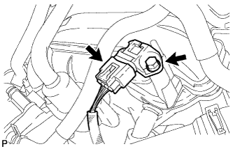

MANIFOLD ABSOLUTE PRESSURE SENSOR > REMOVAL |
| 1. REMOVE V-BANK COVER SUB-ASSEMBLY |
 |
Raise the front of the V-bank cover to detach the 2 pins. Then detach the 2 V-bank cover hooks from the No. 1 V-bank cover bracket and remove the V-bank cover.
| *1 | Pin |
| *2 | Hook |
| *3 | No. 1 V-bank Cover Bracket |
| 2. REMOVE MANIFOLD ABSOLUTE PRESSURE SENSOR |
|  |
Disconnect the manifold absolute pressure sensor connector.
Remove the bolt and manifold absolute pressure sensor.
Remove the O-ring from the manifold absolute pressure sensor.